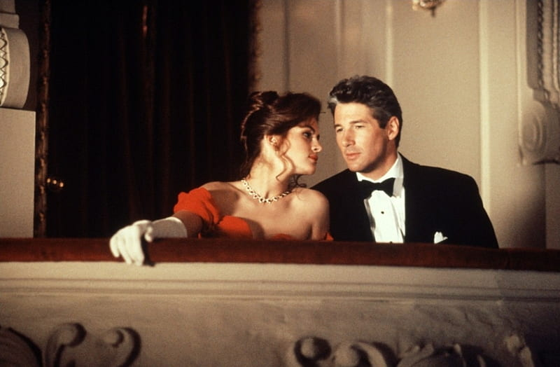
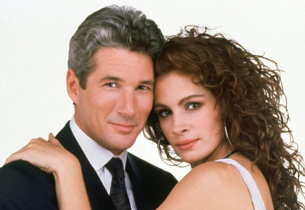

Pretty woman
Sipnosis
Edward Lewis (Richard Gere) es un hombre de negocios solitario. Una noche contrata los servicios de Vivian Ward (Julia
Roberts), una prostituta. Cuando a la mañana siguiente Edward tiene que asistir a un evento social ineludible en Los
Ángeles, le propone a Vivian quedarse con él toda la semana para acudir a diversos eventos a cambio de más dinero.
La joven, que a pesar de su profesión es una romántica empedernida, acepta.
Poco a poco Edward y Vivian se van conociendo y la química entre ambos va creciendo de tal manera, que cada uno
comienza a cambiar ciertos aspectos de su vida que en un principio pudieran ser motivo de división o separación entre
ambos. Poco a poco, al atracción se convierte en amor, pero hay un problema: se acerca el fin de la semana, y ninguno
de los dos está seguro de los sentimientos del otro o como va a terminar su peculiar cuento de hadas.
Tráiler
 
Si quieres comprarla o alquilarla pincha aquí